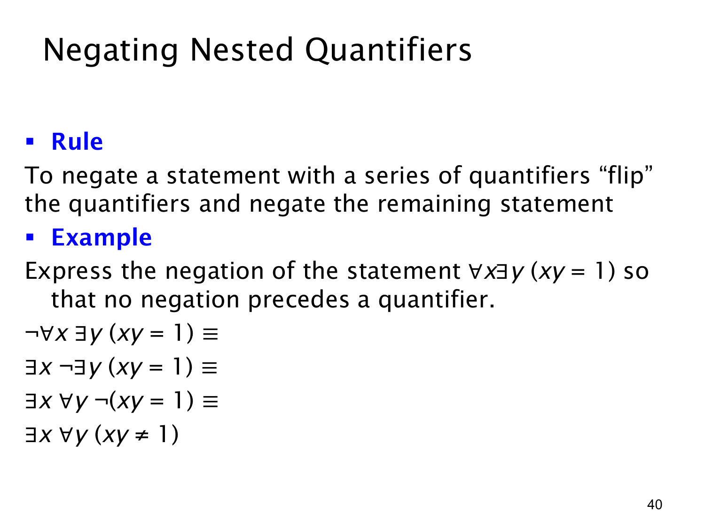

L1.2 · 第 40 页讲解原文
查看这一页课件

否定嵌套量词：逐层翻转直到谓词
对一串嵌套量词取否定时，课件给出的规则是：让否定号从外向内依次通过每个量词，经过 ∀ 就改成 ∃，经过 ∃ 就改成 ∀，最后再否定最里面的谓词。每一步都要保留原来的变量顺序和作用域。
本页要否定
∀x∃y(xy=1),
并要求最终没有否定号直接位于量词之前。逐步推导为
¬∀x∃y(xy=1)≡∃x¬∃y(xy=1)≡∃x∀y¬(xy=1)≡∃x∀y(xy=1).
第一步只翻转外层 ∀x，第二步再翻转内层 ∃y，第三步把等号否定为不等号。原式说“每个 x 都能找到某个 y 使乘积为 1”；否定式说“存在某个 x，无论选什么 y，乘积都不等于 1”。这是一个对所有候选 y 都失败的 x，正好推翻原句。
若论域是实数，取 x=0 就是后一命题的见证，因为 0⋅y=0=1 对任何实数 y 都成立；但课件这页主要训练的是形式上的否定变形，未在公式中指定论域。不要把结果误写成 ∀x∀y(xy=1)：原句失败只需要一个有问题的 x，不要求每个 x 都失败。